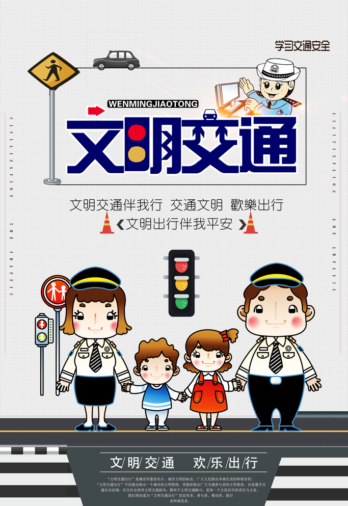
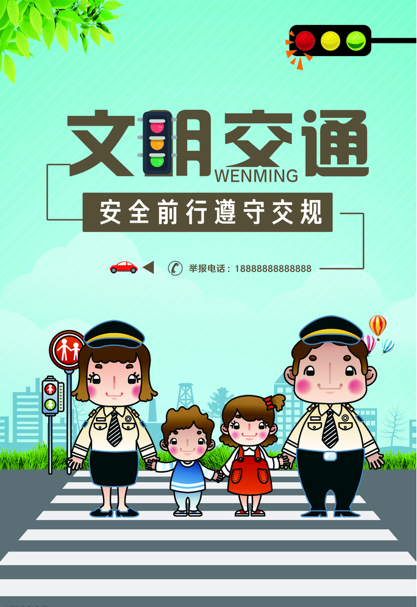

尊敬长辈，爱护幼小。
无论你是驾车穿梭在城市的道路上，还是悠闲漫步在繁华的街头；无论你是骑行在上班的清晨，还是乘坐公交车赶回温暖的家。无论你是否意识到，我们都已成为城市交通的一份子。文明交通是城市文明的缩影，每一个交通参与者都是这张文明相片上的主角。
文明交通不仅能反映出城市的文明程度，更能折射出广大交通参与者的文明素养。和谐有序的城市交通环境，离不开每一位市民的参与。在这里，我们发出倡议：
一、倡导文明出行从我做起。让我们牢固树立文明交通意识，积极维护道路交通秩序，自觉养成文明交通习惯，形成“车让人、让出一份文明，人让车、让出一份安全，车让车、让出一份秩序”的文明交通风尚。
二、摒弃交通陋习从我做起。让我们严格遵守交通法规，做到行车安全有序、行路文明有序、乘车礼让有序。自觉抵制交通陋习，即自觉抵制机动车随意变更车道、不按规定车道行驶、争道抢行、违法鸣笛；非动车闯红灯、违法带人、走快车道、停车越线；行人闯红灯、斜穿马路等交通违法行为。
三、抵制危险驾驶从我做起。让我们从自身做起，坚决抵制“六大危险驾驶行为”，即坚决抵制酒后驾驶、超速行驶、疲劳驾驶、闯红灯、强行超车、超员超载等危险驾驶行为，增强文明交通行为自律意识。
文明，对我们每个人来说，也许只是红灯前停下的一小步，对城市来说，却是走向和谐的一大步。让我们从我做起，从每一个文明细节做起，养成良好的出行习惯，营造安全、文明、畅通的交通环境，努力争创文明城市，共同建设幸福长泰，城市将会因你而更加美好！
返回目录